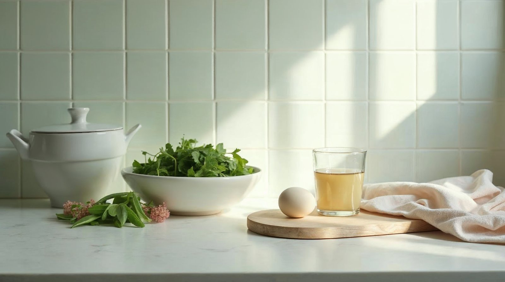
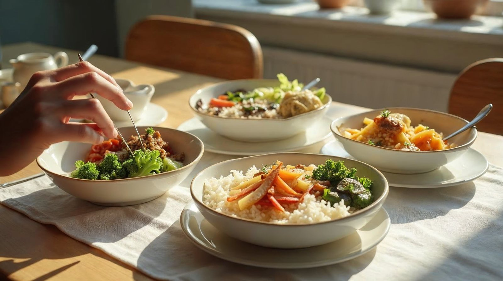
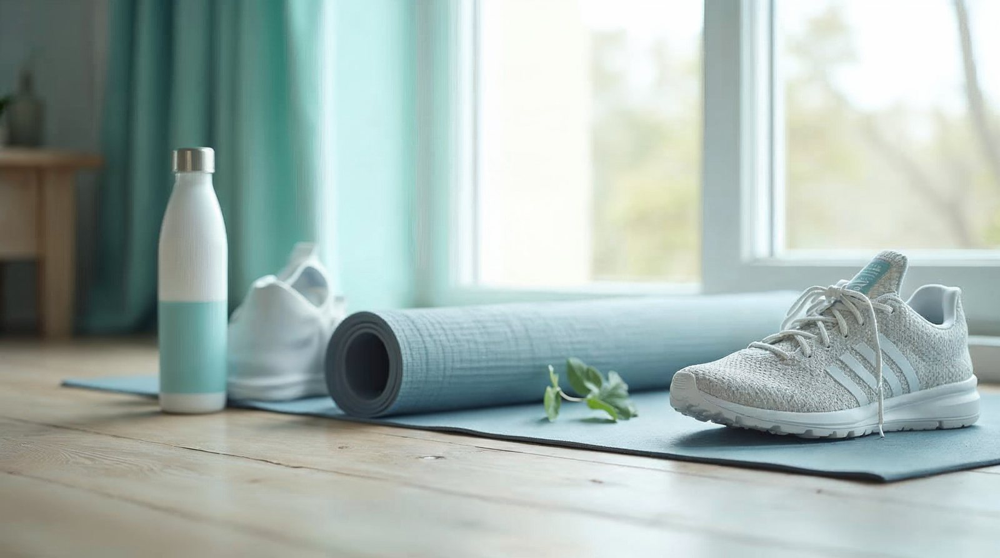

이종호 한의사 감수좋은꿈참사랑한의원 대표원장 (한의사 면허번호 19769)발행 2026-11-26 · 수정 2026-11-26
이 글의 차례
옷장 앞에서 몇 년째 잘 입던 바지를 꺼내 입습니다. 단추가 잠기지 않습니다. 먹는 양은 예전과 크게 다르지 않은데, 언제부터인지 허리가 두꺼워지고 배가 앞으로 나와 있습니다. 체중계 숫자도 해마다 조금씩, 하지만 꾸준히 올라갑니다.
진료실에서 갱년기 무렵의 분들께 가장 자주 듣는 말 가운데 하나가 물만 먹어도 살이 찐다는 하소연입니다. 젊을 때는 며칠 조심하면 금세 돌아오던 몸이, 이제는 아무리 애써도 꿈쩍하지 않는다고 하십니다. 그 말 속에는 서운함과 당혹스러움이 함께 담겨 있습니다.
갱년기는 몸의 호르몬이 크게 바뀌는 시기입니다. 열이 오르고 땀이 나며 잠이 흔들리는 변화와 함께, 살이 붙는 자리와 속도도 달라집니다. 같은 노력을 해도 결과가 다르게 나오는 것은 의지가 약해져서가 아니라 몸의 바탕이 바뀌었기 때문인 경우가 많습니다.
이 글에서는 갱년기 무렵 체중과 뱃살이 왜 늘어나는지, 열감과 잠, 근육과는 어떻게 엮여 있는지, 그리고 생활과 진료에서 무엇을 함께 살피는지 차례로 정리해 보겠습니다. 남성분들도 중년 이후 비슷한 변화를 겪으시니 함께 참고하셔도 좋습니다.
갱년기에는 몸에 어떤 변화가 생기나요
여성의 갱년기는 대개 40대 중후반에서 50대 초반 사이, 생리가 불규칙해지다가 멈추는 앞뒤 몇 년을 말합니다. 이 시기에 난소에서 나오는 여성 호르몬이 줄어들면서 몸 곳곳에 변화가 생깁니다.
얼굴과 가슴으로 열이 확 오르는 열감, 밤에 땀에 젖어 깨는 일, 잠이 얕아지는 것, 마음이 쉽게 가라앉거나 예민해지는 것, 관절이 뻣뻣해지는 것, 피부와 눈이 건조해지는 것이 흔히 함께 나타납니다. 체중과 체형의 변화도 이 가운데 하나입니다.
변화의 정도와 기간은 사람마다 크게 다릅니다. 몇 달 사이에 지나가는 분도 있고, 몇 년에 걸쳐 오르내리는 분도 있습니다. 그래서 다른 사람과 비교하기보다 내 몸이 지금 어떤 시기를 지나고 있는지를 아는 것이 먼저입니다.
왜 갱년기에 뱃살이 늘어날까요
갱년기 체중 증가는 한 가지 이유보다 여러 변화가 한꺼번에 겹쳐 생깁니다. 그 가운데 중요한 것들을 정리하면 다음과 같습니다.
- 여성 호르몬이 줄면서 지방이 엉덩이와 허벅지보다 배 쪽에 쌓이기 쉬워지는 경우
- 나이가 들며 근육이 줄어 몸이 쓰는 기본 에너지가 함께 줄어드는 경우
- 열감과 밤 땀으로 잠이 얕아져 식욕이 흔들리는 경우
- 마음이 가라앉거나 예민해져 단것과 야식이 당기는 경우
- 관절이 뻣뻣해지고 피로가 쌓여 움직임이 줄어드는 경우
- 먹는 양은 그대로인데 몸이 필요로 하는 양은 줄어든 경우
이 가운데 근육이 줄어드는 변화는 소리 없이 진행됩니다. 근육은 가만히 있어도 에너지를 쓰는 조직이라, 근육이 줄면 같은 양을 먹어도 남는 에너지가 생기고 그것이 배 쪽 지방으로 쌓이기 쉽습니다. 젊을 때와 같은 양을 먹는데 살이 찌는 이유 가운데 하나가 여기에 있습니다.
지방이 쌓이는 자리가 바뀌는 것도 중요합니다. 갱년기 이전에는 엉덩이와 허벅지 쪽에 살이 붙던 분도, 이후에는 배와 허리 쪽에 먼저 붙는 경우가 많습니다. 배 쪽 지방은 혈압, 혈당, 콜레스테롤과 더 가깝게 엮여 있어서 체중 숫자보다 허리둘레를 함께 보시라고 권합니다.
잠과 열감은 체중과 어떻게 엮여 있나요
밤에 열이 올라 이불을 걷어차고, 땀에 젖어 깨고, 다시 잠들기 어려운 날이 이어지면 낮에 몸이 무겁고 지칩니다. 지친 몸은 빠른 에너지를 원해서 단것과 빵, 면, 커피를 더 찾게 됩니다.
잠이 부족하면 배고픔을 키우는 신호는 커지고 배부름을 알리는 신호는 약해지는 쪽으로 기울기 쉽습니다. 그래서 갱년기 체중 관리는 식사보다 잠을 먼저 살피는 것이 순서인 경우가 많습니다. 잠이 조금 안정되면 저녁 간식도 함께 줄어들 수 있습니다.
마음의 변화도 함께 봅니다. 이유 없이 마음이 가라앉거나, 작은 일에도 눈물이 나거나, 예민해지는 날에는 먹는 것으로 위로를 받으려는 마음이 커집니다. 그런 날을 탓하기보다, 어떤 날 그런 마음이 드는지를 알아 두는 것이 도움이 됩니다.

갑상선이나 다른 원인과는 어떻게 구분하나요
갱년기 무렵 체중이 늘면 모두 갱년기 탓으로 여기기 쉽지만, 같은 시기에 다른 원인이 겹치기도 합니다. 갑상선 기능이 떨어지면 체중이 늘고, 몸이 붓고, 추위를 많이 타며, 피부가 건조하고 변비가 생기며 기운이 없습니다. 갱년기 변화와 겹쳐 보여 놓치기 쉽습니다.
일부 약, 예를 들어 스테로이드나 일부 우울감 약, 혈당을 낮추는 일부 약도 체중에 영향을 줄 수 있습니다. 또 체중이 늘면서 잠잘 때 코골이가 심해지고 숨이 멈추는 듯한 모습이 보인다면 수면 무호흡도 함께 살펴야 합니다. 그래서 최근 건강검진 결과와 드시는 약을 함께 확인합니다. 체중이 걱정되더라도 약은 처방한 의사와 상의 없이 줄이거나 끊지 마세요.
한의학에서는 이 시기를 어떻게 보나요
한의학에서는 갱년기를 몸을 적셔 주고 받쳐 주던 바탕이 서서히 줄어드는 시기로 봅니다. 그 바탕이 줄면 열이 위로 뜨기 쉽고, 잠이 얕아지며, 몸의 물과 기운이 고르게 돌지 못해 붓고 무거워지기 쉽습니다.
같은 갱년기 체중 증가라도 결은 다릅니다. 열이 오르고 입이 마르며 잠이 얕은 분, 몸이 무겁고 잘 붓고 아침에 손이 뻣뻣한 분, 쉽게 지치고 소화가 약하며 기운이 없는 분은 생활에서 먼저 챙길 것이 서로 다릅니다. 그래서 체중 숫자보다 몸의 결을 먼저 봅니다.
관절과 움직임도 함께 봅니다
갱년기 무렵에는 아침에 손가락이 뻣뻣하고, 무릎과 발바닥이 아프며, 어깨가 굳는 분이 많아집니다. 몸이 여기저기 불편하면 자연스럽게 걷는 시간이 줄고, 움직임이 줄면 근육도 함께 줄어 체중이 늘기 쉬운 고리가 생깁니다.
그래서 체중 이야기를 할 때 관절 이야기를 함께 여쭙니다. 무릎이 아파 걷기 어렵다면 실내 자전거나 물속 걷기처럼 관절 부담이 적은 움직임을 먼저 권하고, 아침 뻣뻣함이 심하다면 잠자리에서 손발을 천천히 풀어 준 뒤 일어나는 습관부터 시작합니다. 움직일 수 있는 몸을 먼저 만드는 것이 체중 관리의 바탕이 됩니다.

가족의 식탁과 함께 바꾸기
이 시기의 분들은 가족의 식사를 챙기느라 정작 본인의 끼니는 남은 반찬으로 서서 때우는 경우가 많습니다. 아이들이 남긴 밥을 아까워 마저 먹고, 가족이 늦게 들어오면 함께 야식을 드시기도 합니다.
내 몸을 위한 한 끼를 따로 챙기는 것이 출발점이 될 수 있습니다. 내 접시에 단백질 반찬과 채소를 먼저 담고, 남은 음식은 다음 끼니로 미루는 연습을 해 보세요. 작은 변화지만 한 달이 쌓이면 허리둘레에서도 차이가 보일 수 있습니다.
먼저 이렇게 여쭙니다
처음 오시면 저는 대략 이런 순서로 여쭙니다. 미리 생각해 오시면 이야기가 수월해집니다.
- 생리 주기는 어떻게 바뀌었고, 마지막 생리는 언제였나요?
- 체중과 허리둘레가 늘기 시작한 것은 언제부터인가요?
- 열감, 밤 땀, 잠이 깨는 일은 얼마나 자주 있나요?
- 하루 끼니 시각과 간식, 야식은 어떠신가요?
- 걷거나 운동하는 시간은 하루 어느 정도인가요?
- 호르몬제나 다른 약, 영양제를 드시나요?
최근 건강검진 결과지가 있다면 혈당, 콜레스테롤, 갑상선 수치를 함께 볼 수 있어 도움이 됩니다. 어머니나 자매가 갱년기를 어떻게 지나셨는지도 참고가 됩니다. 정확히 기억나지 않으셔도 괜찮습니다. 대략의 흐름만 알아도 이야기가 시작됩니다.

일상에서 먼저 해 볼 수 있는 것
갱년기 체중 관리는 굶는 것보다 근육을 지키고 잠을 챙기는 쪽이 오래갑니다. 아래 가운데 지금 가장 쉬운 것 하나부터 골라 보세요.
- 끼니마다 단백질 반찬 한 가지를 먼저 챙기기
- 밥과 면, 빵은 양을 조금 줄이고 채소 반찬을 넉넉히
- 일주일에 두세 번 가벼운 근력 운동 더하기
- 하루 30분 정도 걷기, 가능하면 햇볕 아래에서
- 잠드는 시각을 일정하게, 침실은 조금 서늘하게
- 저녁 술과 늦은 커피 줄이기
근력 운동은 이 시기에 특히 중요합니다. 의자에 앉았다 일어나기, 벽 짚고 팔굽혀 펴기, 가벼운 아령 들기처럼 집에서 할 수 있는 동작이면 충분합니다. 근육을 지키는 것은 체중뿐 아니라 뼈와 관절, 균형을 지키는 데도 도움이 됩니다.
침실 온도는 조금 서늘하게, 이불은 얇은 것을 여러 겹으로 덮어 열이 오를 때 쉽게 걷어 낼 수 있게 해 두세요. 잠옷은 땀을 잘 흡수하는 면으로 고르시고, 머리맡에 미지근한 물 한 잔을 두시면 밤에 깼을 때 도움이 됩니다.
식사는 거르지 않는 것이 먼저입니다. 아침을 거르고 저녁에 몰아 먹으면 배 쪽에 살이 붙기 쉬워집니다. 세 끼 시각을 일정하게 맞추고, 저녁은 잠들기 세 시간 전에는 마치시길 권합니다. 단것이 당길 때는 과자 대신 견과류 한 줌이나 요거트를 곁에 두세요.
허리둘레는 한 달에 한 번, 같은 시각에 배꼽 높이에서 재어 적어 두세요. 체중 숫자가 크게 움직이지 않아도 허리둘레가 줄고 있다면 몸이 좋은 쪽으로 움직이고 있다는 신호로 볼 수 있습니다.
열감이 오를 때 찬 음료를 벌컥벌컥 마시기보다 미지근한 물을 천천히 드시고, 잠깐 창문을 열어 바람을 쐬는 편이 몸을 덜 놀라게 합니다.
한의원에서 함께 살필 수 있는 경우
- 갱년기 무렵부터 먹는 양은 같은데 뱃살과 체중이 늘어난 경우
- 열감과 밤 땀으로 잠이 얕아지면서 낮에 단것이 당기는 경우
- 몸이 무겁고 잘 붓고 아침에 손발이 뻣뻣한 경우
- 마음이 가라앉거나 예민해지면서 식사 리듬이 흔들린 경우
- 관절이 뻣뻣하고 쉽게 지쳐 움직이기가 싫어진 경우
좋은꿈참사랑한의원에 오시면 모든 분의 맥을 먼저 짚고, 열감과 잠, 붓기가 체중과 어떻게 엮여 있는지 여쭤 몸이 어느 쪽으로 기울어 있는지 살핍니다. 필요하면 인바디 결과도 함께 놓고 봅니다.
진찰한 내용을 바탕으로 잠과 식사, 움직임 가운데 먼저 바꿔 볼 것을 정하고, 침이나 한약 상담 가운데 지금 상태에 맞는 것을 함께 정합니다. 한약을 상의할 때는 호르몬제를 포함해 드시는 약을 모두 확인하고 신중히 정합니다.
호르몬 치료나 갑상선, 혈압, 당뇨 진료를 받고 계시다면 그 진료는 처방한 병원에서 그대로 이어 가셔야 하고, 드시는 약은 상의 없이 멈추지 않습니다. 필요하면 산부인과나 내과 진료를 함께 받으시도록 안내합니다. 한의원 진료는 그 곁에서 잠과 열감, 몸의 리듬을 함께 살피는 자리입니다.
이렇게 기록해 오시면 상담이 쉬워집니다
2주 정도만 간단히 적어 와 주세요. 몸의 변화와 생활을 나란히 놓으면 무엇이 체중을 흔드는지 보이기 시작합니다.
- 일주일에 한 번 같은 조건에서 잰 체중, 한 달에 한 번 허리둘레
- 열감과 밤 땀이 있었던 날과 횟수
- 잠든 시각과 깬 시각, 밤에 깬 횟수
- 끼니 시각과 간식, 야식
- 걷거나 운동한 시간
- 마음이 가라앉거나 예민했던 날
기록은 잘했는지 못했는지를 따지려는 것이 아닙니다. 어떤 날 몸이 흔들리는지를 찾는 지도라고 생각해 주세요. 열감이 심했던 밤 다음 날 간식이 늘었다는 것만 알아도 무엇을 먼저 챙길지가 분명해집니다.
달라진 몸과 다시 친해지기
갱년기의 몸은 젊을 때의 몸과 다릅니다. 예전 방식으로 굶거나 몰아붙이면 지치기만 하고 결과는 따라오지 않는 경우가 많습니다. 지금의 몸에 맞는 속도와 방법을 새로 찾는 시간이라고 생각해 주세요.
이번 주에는 하나만 정해 보세요. 아침 단백질 반찬 하나, 저녁 걷기 30분, 잠드는 시각 30분 당기기. 그 하나가 몸에 붙으면 다음 걸음을 함께 정하겠습니다. 다음에 오시면 기록을 함께 펼쳐 놓고 몸이 어떻게 답했는지부터 살펴보겠습니다.
이런 증상은 먼저 확인이 필요합니다
- 생리가 완전히 멈춘 뒤 다시 출혈이 있거나, 배가 빠르게 불러 오고 아랫배에 덩어리가 만져지는 경우
- 가슴이 조이거나, 숨이 차거나, 며칠 사이 체중이 빠르게 늘며 다리가 심하게 붓는 경우
이런 신호가 있으면 한의원보다 가까운 병원이나 응급실을 먼저 찾으세요.
함께 읽으면 좋은 글
- 비만이라는 말을 들었을 때 체중보다 먼저 무엇을 살피나요?
- 갱년기에 몸이 달라질 때 한의원에서는 무엇을 먼저 묻나요?
- 갱년기에 밤마다 땀에 젖어 깨는 날이 많을 때는 어떻게 하나요?
- 체중은 보통인데 복부 지방이 걱정될 때는 어떤 검진을 보나요?
- 40~50대 남성이 기운과 의욕이 떨어지고 잠·뱃살이 달라질 때(남성 갱년기)는 무엇을 살피나요?
여쭙는 것
- 생리 주기는 어떻게 바뀌었고, 마지막 생리는 언제였나요?
- 체중과 허리둘레가 늘기 시작한 것은 언제부터인가요?
- 열감, 밤 땀, 잠이 깨는 일은 얼마나 자주 있나요?
생활에서 해 볼 것
- 끼니마다 단백질 반찬 한 가지를 먼저 챙기기
- 밥과 면, 빵은 양을 조금 줄이고 채소 반찬을 넉넉히
- 일주일에 두세 번 가벼운 근력 운동 더하기
한의원에서 함께 살필 것
- 갱년기 무렵부터 먹는 양은 같은데 뱃살과 체중이 늘어난 경우
- 열감과 밤 땀으로 잠이 얕아지면서 낮에 단것이 당기는 경우
- 몸이 무겁고 잘 붓고 아침에 손발이 뻣뻣한 경우
먼저 확인이 필요한 신호
- 생리가 완전히 멈춘 뒤 다시 출혈이 있거나, 배가 빠르게 불러 오고 아랫배에 덩어리…
- 가슴이 조이거나, 숨이 차거나, 며칠 사이 체중이 빠르게 늘며 다리가 심하게 붓는 경우
한눈에 보는 표
| 구분 | 핵심 |
|---|---|
| 여쭙는 것 | 생리 주기는 어떻게 바뀌었고, 마지막 생리는 언제였나요? 체중과 허리둘레가 늘기 시작한 것은 언제부터인가요? |
| 생활에서 해 볼 것 | 끼니마다 단백질 반찬 한 가지를 먼저 챙기기 밥과 면, 빵은 양을 조금 줄이고 채소 반찬을 넉넉히 |
| 한의원에서 함께 살필 것 | 갱년기 무렵부터 먹는 양은 같은데 뱃살과 체중이 늘어난 경우 열감과 밤 땀으로 잠이 얕아지면서 낮에 단것이 당기는 경우 |
| 먼저 확인이 필요한 신호 | 생리가 완전히 멈춘 뒤 다시 출혈이 있거나, 배가 빠르게 불러 오고 아랫배에 덩어리가 만져지는 경우 가슴이 조이거나, 숨이 차거나, 며칠 사이 체중이 빠르게 늘며 다리가 심하게 붓는 경우 |
자주 묻는 질문
갱년기 뱃살은 나이 들면 어쩔 수 없는 건가요?
몸의 변화로 배 쪽에 살이 붙기 쉬워지는 것은 맞지만, 근육을 지키고 잠과 식사 리듬을 챙기면 늘어나는 속도를 늦추는 데 도움이 됩니다. 허리둘레를 함께 기록해 흐름을 보세요.
갱년기에는 굶어서라도 빼야 하나요?
굶으면 근육이 함께 줄어 오히려 살이 붙기 쉬운 몸이 될 수 있습니다. 끼니를 거르지 않고 단백질을 챙기며 근력 운동을 더하는 쪽을 권합니다.
호르몬제를 먹고 있는데 한약 상담을 받아도 되나요?
드시는 약을 모두 확인하고 신중히 정합니다. 약 봉투나 처방전 사진을 가져와 주시고, 호르몬 치료는 처방한 선생님과 상의하며 그대로 이어 가세요.
체중보다 허리둘레를 보라는 이유는 무엇인가요?
갱년기 이후에는 지방이 배 쪽에 쌓이기 쉽고, 배 쪽 지방은 혈압과 혈당과 더 가깝게 엮여 있습니다. 체중이 그대로여도 허리둘레가 줄고 있다면 좋은 흐름입니다.
좋은꿈참사랑한의원은 재진 때 지난번 이야기부터 이어서 여쭙니다. 진료시간과 예약은 오시는 길에서 확인하세요.
어디서 상담받을 수 있나요?
좋은꿈참사랑한의원은 서울 동작구 만양로2길 2 신성빌딩 3층·5층(서울 동작구 상도동, 7호선 상도역 3번 출구 근처)에 있습니다. 한의사 3명(이종호 대표원장, 조영기 수석진료원장, 정원영 진료원장)이 진료합니다. 진료시간은 평일 09:30~20:00(점심 13:00~14:00), 토·일·공휴일 09:30~15:00이며, 방문 전 전화로 확인을 권합니다. 예약은 네이버 예약, 카카오톡 상담, 전화 02-815-7510로 받습니다.
이 글은 일반적인 건강 정보이며 개인의 진단이나 치료를 대신하지 않습니다. 증상이 있거나 복용 중인 약이 있다면 진료를 통해 확인하세요. 치료 효과는 개인마다 다를 수 있습니다.
작성 기준: 일반적으로 알려져 있는 건강 정보를 참고해 정리했습니다(대표원장 감수). 증상 기록은 1~2주 동안 하루 1회, 비슷한 시간에 적어 오시면 지난 상태와 비교하기 쉽습니다.